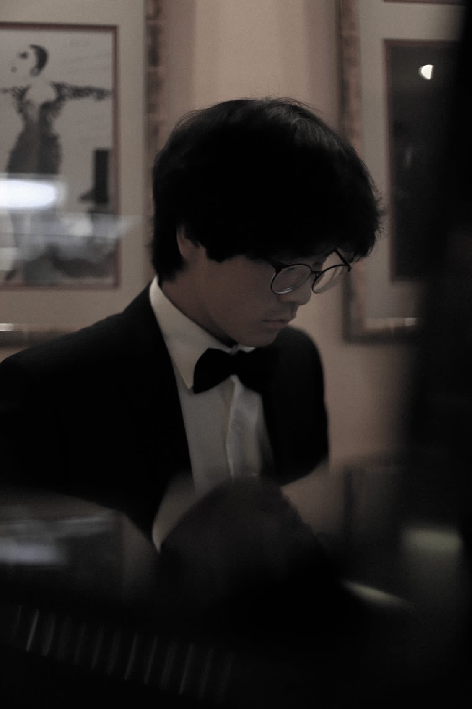
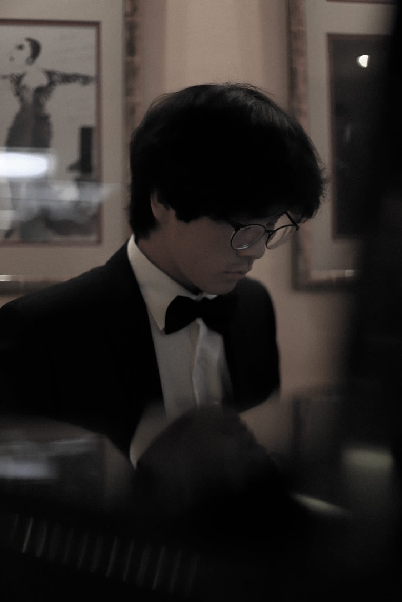

Home
Johann Zhao wurde am 25.11.2003 in Salzburg, Österreich geboren. Er erhielt seinen ersten Klavierunterricht mit 5 Jahren und wurde im Alter von 9 Jahren in das Pre-College der Universität Mozarteum aufgenommen. Dort studierte er zunächst langjährig bei Prof. Cordelia Höfer-Teutsch und seit 2023 bei Prof. Connie Shih.
Seine ersten Klavierkonzerte von W. A. Mozart spielte er als 11-Jähriger bei den „Salzburger Schlosskonzerten“ gemeinsam mit den Salzburger Solisten. Als 12-Jähriger gewann er einen New Yorker Klavierwettbewerb und spielte beim Schlusskonzert in der Carnegie-Recital-Hall.
Mit 13 Jahren feierte er sein Debut als Solist mit den Bad Reichenhaller Philharmonikern (Leitung: Christian Simonis) mit dem Klavierkonzert Nr. 1 von F. Mendelssohn und wurde sofort wieder engagiert. Johann ist zudem erster Preisträger diverser nationaler und internationaler Wettbewerbe, darunter 1. Preis beim internationalen Smetana Klavierwettbewerb (Tschechien), mehrfache 1. Preise beim deutschen Bundeswettbewerb „Jugend Musiziert“ mit Höchstpunktzahl und mehrfacher Bundessieger sowie Landessieger 2020 des österreichischen Prima la Musica-Wettbewerbs.
Im April 2019 war Johann Solist in der Berliner Philharmonie und führte mit dem Berliner Sinfonieorchester (Leitung: Christoph Koncz) das Klavierkonzert Nr. 1 von Liszt auf. Als begeisterter Kammermusiker spielt Johann in diversen Formationen, wo er wichtige Impulse von Cibrán Sierra Vázquez (Cuarteto Quiroga), Leonhard Roczek (Minetti Quartett) und Connie Shih (Duopartner Steven Isserlis) erhielt.
2019 gewann er den Festivalpreis und Publikumspreis des Schleswig-Holstein Musikfestivals im Duo mit Fabian Egger. Im September 2023 trat er mit seinem Lupus-Trio im Rahmen des „Amazing Haydn“-Festivals in Belgien auf. Er trat auch im Rahmen anderer renommierter Festivals auf – darunter das Van Cliburn Junior Festival (USA) oder die Salzburger Festspiele. Masterclasses erhielt er u.a. von Elisabeth Leonskaja und Arnulf von Arnim. Johann ist Stipendiat der Deutschen Stiftung Musikleben.

Mediathek


 



News & Presse
Aktuelle Neuigkeiten und Presseberichte
KulturVision
Vier junge Nachwuchstalente begeistern im Barocksaal KulturVision.
Kieler Nachrichten
Duo Egger / Zhao gewinnt beim SHMF-Förderpreis der Sparkassen-Finanzgruppe Kieler Nachrichten.
Salzburger Nachrichten
Salzburgs Jugend musiziert Salzburger Nachrichten.
Zhao & Zech
Das Klavierduo Zhao & Zech (Johann Zhao & Karim Zech) besteht aus zwei Studenten der Universität Mozarteum Salzburg und entstand im Jahr 2023 durch ein spontan geplantes Zusammenspiel bei einer Veranstaltung. Seither spielen sie regelmäßig in Konzerten und geben Rezitals auf nationaler als auch internationaler Ebene. Bisherige Auftritte gab es in Salzburg, Wien, Japan und Deutschland. Ihr breites und abwechslungsreiches Repertoire erstreckt sich vom Barock bis hin zur zeitgenössischen Musik. Bedeutende Impulse erhielten sie bereits von Persönlichkeiten wie Prof. Cordelia Höfer-Teutsch oder Prof. Connie Shih.